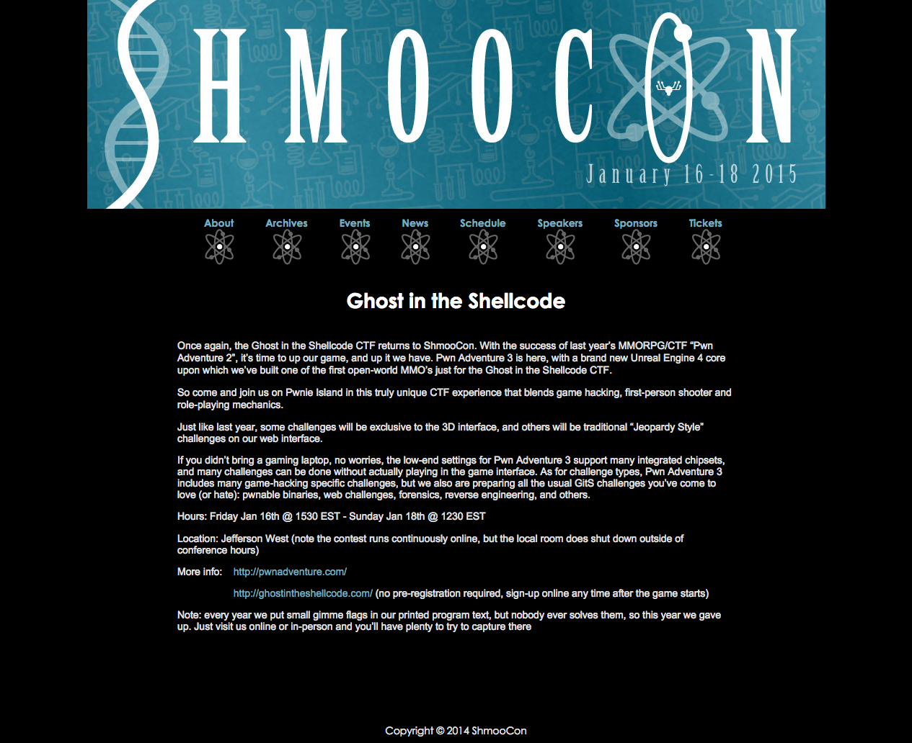

20150205: SANS Pen Test 2015 Challenge #ShmooCon - writeup
Winning entry
/intro_and_questions.txt
- passwd(
/open_this_to_win.7z) = concat(Build It, Belay It, and Bring It On/,0000c15998,3e9cd9ea80d80606,iamnumbersix) - which extracts
The Phrase That Pays
… Anyway, here's the last part of the challenge. Send an email with a brief write-up of how you solved each question to shmoochallenge2015@sans.org by February 28, 2015. Use the following subject for the email: "The narwhal bacons at midnight." …
Alice has sent Bob an encrypted file. Find it, decrypt it, and find the secret inside. Look in the alice.pcap file to answer this question. Hint: Alice is often quite chatty with Bob, and phrases she references could be useful to use as passwords (or passphrases). You won't need to use wordlists, mutation, or brute-force of any kind to decrypt the encrypted file.
- load given
alice.pcapinto Wireshark - apply bpf filter for SMB NT Create AndX Response pkts:
(smb.cmd == 0xa2) && (smb.flags.response == 1) - reveals one of the archives as promised, ie.
another_message.7z - follow TCP stream to find the raw dump
- locate the magic # for 7z:
'7' (or \x37), 'z' (or \x7a), 0xBC, 0xAF, 0x27, 0x1C - carve the required 7zip archive from the SMB pkts captured
- unfortunately, the archive is password protected :(
- run tool:
chaosreaderoveralice.pcapto generate a comprehensive HTML report - from the webchat log under "GET/POST Report" @
/getpost.htmlgenerated - clue:
PRIVMSG #shmoocon :I_am_Bob: Oh, and my favorite, there's a game going on that blends game hacking, first-person shooting, and role-playing mechanics! - clue:
PRIVMSG #shmoocon :I_am_Bob: You'll have to check the website yourself ;) - checking the website @ http://www.shmoocon.org/ghost_in_the_shellcode as directed
- exact phrase is indeed found in the webpage description 
- so archive password is
Ghost in the Shellcode - extract
another_message.7zwith passwd:Ghost in the Shellcode - reveals
message.txt, containing the secret:Build It, Belay It, and Bring It On/ - which happens to refer to the three tracks in the conference

Carol has used Firefox for Android to search for, browse, and save a particular image. A compressed copy of her /data/data/org.mozilla.firefox folder is in the question_assets folder, named "org.mozilla.firefox.tgz". Find the serial number of the lens used to take the download picture, which is the secret for this question. Hint: You may have to use resources outside the org.mozilla.firefox folder to fully answer this question.
- use tool:
MozillaCacheView.exeto look for images within the profile cache - found
1000.jpg, which is also the startup image when loading the profile/org.mozilla.firefox/files/mozilla/9tnld04f.defaultviafirefox -ProfileManager - Harrison Ford @ Comic Con
- view img EXIF metadata via:
exiftool 1000.jpg | egrep "Lens Serial Number"- online tool:
Jeffrey's Exif Viewerto find the serial # of the lens used to snap the photo
- secret obtained:
0000c15998
Dave messed up and deleted his only copy of an MP3 file. He'd really appreciate it if you could retrieve it for him - look inside svn_2015.dump.gz to get started. Once you've recovered the audio file, look at it carefully to find the secret.
gunzip svn_2015.dump.gz‐> svn_2015.dump- recreate the SVN repo
- $
svnadmin create repo - $
svnadmin load repo <svn_2015.dump - $
svn co "file://`pwd`/repo" . - from there, examine the SVN log via
svn log
------------------------------------------------------------------------
r4 | jeff | 2015-01-09 18:11:38 +0800 (Fri, 09 Jan 2015) | 1 line
Added latest goals
------------------------------------------------------------------------
r3 | jeff | 2015-01-09 18:09:40 +0800 (Fri, 09 Jan 2015) | 1 line
Oh, drat, I wasn't supposed to include that. Deleting the audio file...
------------------------------------------------------------------------
r2 | jeff | 2015-01-09 18:07:32 +0800 (Fri, 09 Jan 2015) | 1 line
Funny audio I heard and VISUALIZED
------------------------------------------------------------------------
r1 | jeff | 2015-01-09 18:05:05 +0800 (Fri, 09 Jan 2015) | 1 line
Added contents of home directory
------------------------------------------------------------------------svn up -r r2shmooster.mp3Robot Guard #1: Be you robot or human? Leela: Robot, we be. Fry: Yep, just two robots out roboting it up. Robot Guard #2: Administer the test. Robot Guard #1: Which of the following would you prefer? A. a puppy; B. a flower from your sweetie; or C. a large, properly formatted data file? Choose! [Fry and Leela discuss in whispers] Fry: Is the puppy mechanical in any way? Robot Guard #1: No. It is the bad kind of puppy. Leela: Then we'll go with that data file. Robot Guard #1: Correct. Robot Guard #2: The flower would have also been acceptable. Robot Guard #1: You may pass.
OnlineBarcodeReader.com3e9cd9ea80d80606Eve suspects that one of Alice, Bob, or Carol might not be as innocent as they seem. She'll need your help to prove it, however. Examine the other three questions and their included files. Which user, based off their malicious behavior, might be a Cylon? Once you know who it is, find that user's password, which is the secret for this question.
- couldn't find any user login credentials in
Firefox profile cache ie. /../9tnld04f.defaultfrom Q2 - tried
alice.pcapfrom Q1 instead - noticed that besides
another_message.7zsent overSMB - there was also another file
not_exactly_inconspicious.exe - looking at
stringsaround this binary shows
T 172.16.14.146:4444 -> 172.16.14.138:45959 [AP]
WCE v1.42beta (Windows Credentials Editor) - (c) 2010-2013 Amplia Security - by Hernan Ochoa (hernan@ampliasecurity.com)..Use -h for help...
Options: ...-l..List logon sessions and NTLM credentials (default)....-s..Changes NTLM credentials of current logon session......Parameters
: <UserName>:<DomainName>:<LMHash>:<NTHash>....-r..Lists logon sessions and NTLM credentials indefinitely......Refreshes every 5 seconds if
new sessions are found......Optional: -r<refresh interval>....-c..Run <cmd> in a new session with the specified NTLM credentials......Parame
ters: <cmd>....-e..Lists logon sessions NTLM credentials indefinitely......Refreshes every time a logon event occurs....-o..saves all output
to a file......Parameters: <filename>....-i..Specify LUID instead of use current logon session......Parameters: <luid>....-d..Delete NTLM c
redentials from logon session......Parameters: <luid>....-a..Use Addresses......Parameters: <addresses>...-f..Force 'safe mode'....-g..Gener
ate LM & NT Hash......Parameters: <password>....-K..Dump Kerberos tickets to file (unix & 'windows wce' format)...-k..Read Kerberos tickets
from file and insert into Windows cache...-w..Dump cleartext passwords stored by the digest authentication package...-v..verbose output...
Windows Credentials Editor to edit the user login credentials on Bob's server!ngrep -q -I alice.pcap | egrep -i alice | sort | uniq, this line appears: ....Alice\IRRELEVANT:iamnumbersix..Bob\IRRELEVANT:Carol_is_my_favorite..NETWORK SERVICE\WORKGROUP:..iamnumbersix